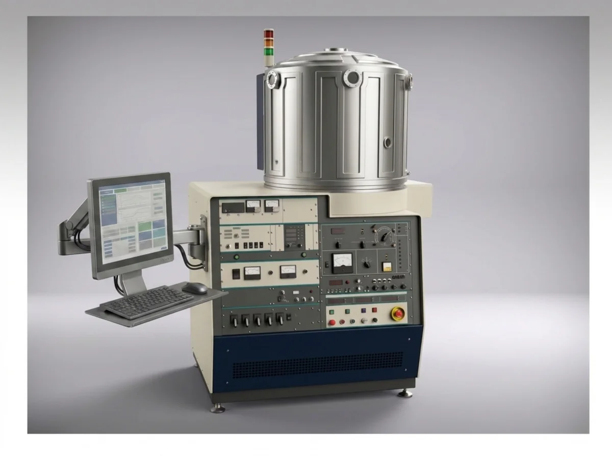
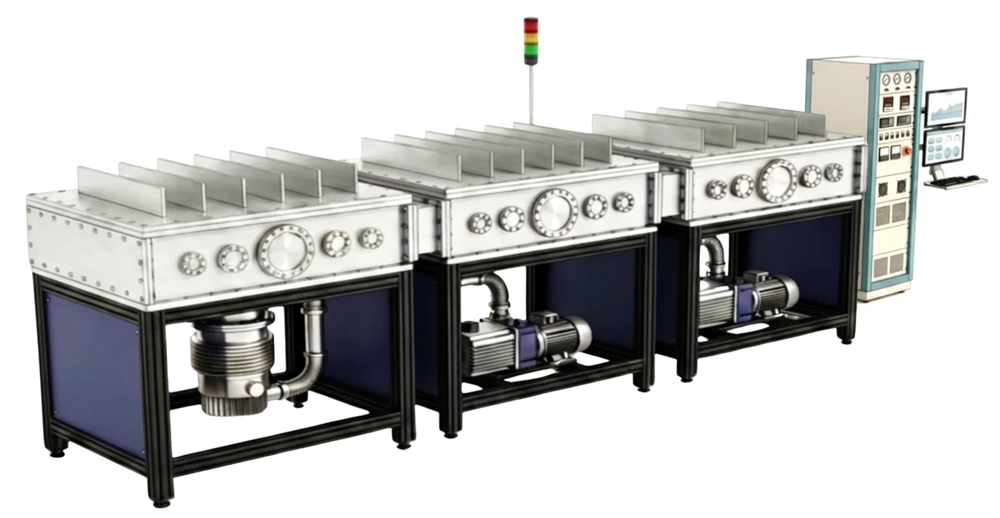
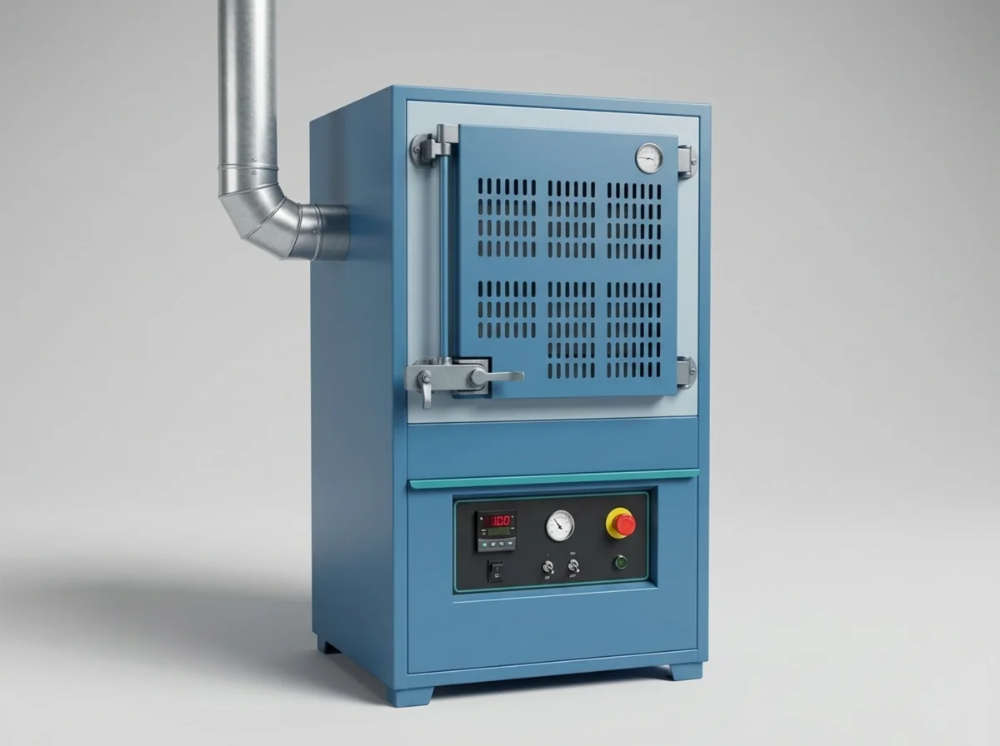
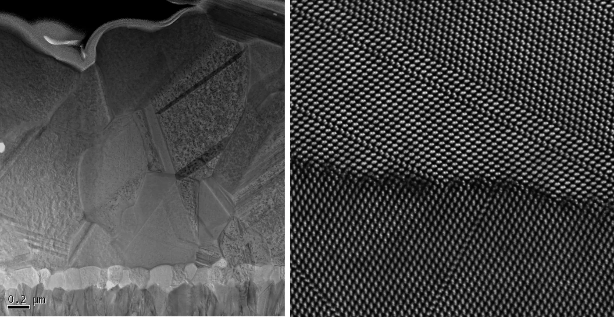
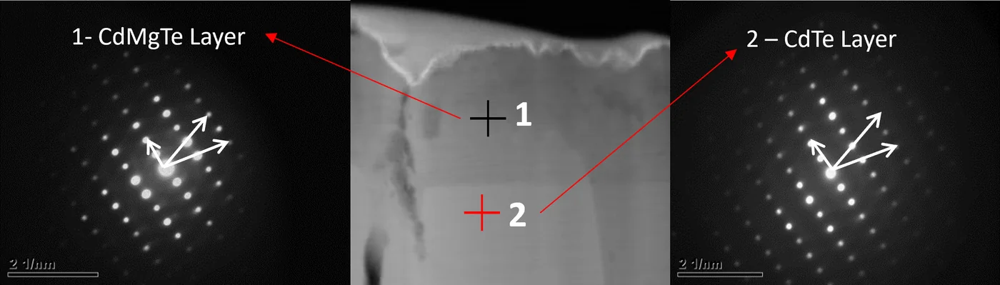
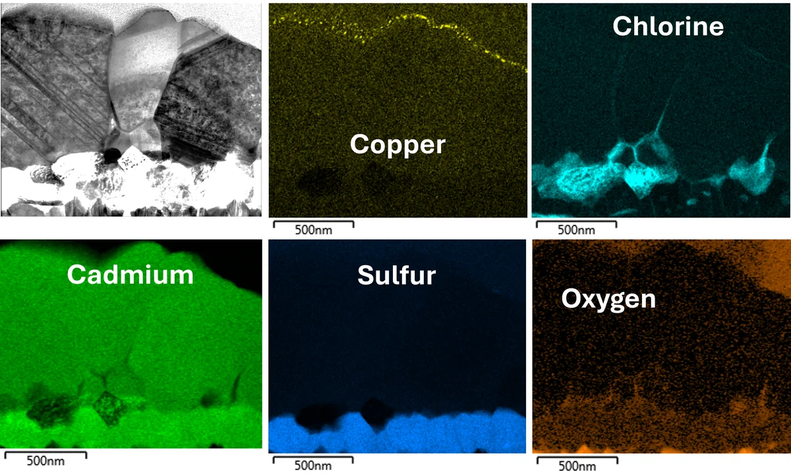
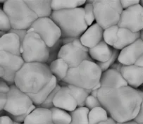
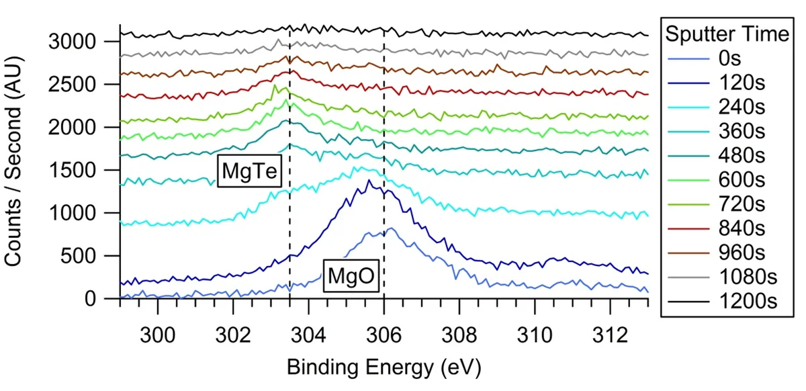
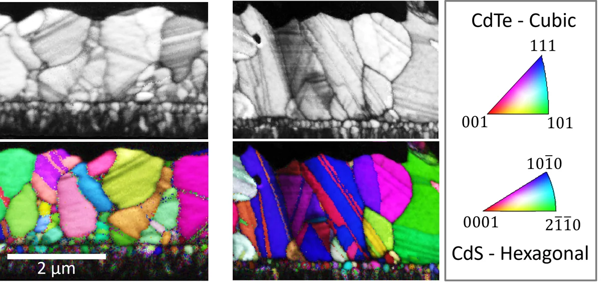

Capabilities
Deposition, processing, and analysis — under one roof.
Use the tools yourself as a trained facility user, or engage our team for process development, prototyping, and production services.
User Facility — Deposition & Processing
Hands-on, open-access instrumentationSputter Deposition
Multiple magnetron sputter systems for thin-film research and development
Thermal Evaporation
Vacuum thermal evaporators for metals and organic thin films
Vacuum Heat Treatment
High-temperature vacuum ovens for annealing and materials processing
Vacuum Thin-Film Processes
Specialized vacuum processing for advanced film architectures
Plasma Treatments
Surface activation, cleaning, and modification
Batch Production Line
In-line multi-target sputter system for substrates up to 48" wide — feasibility to pilot scale



Equipment illustrations depict systems as commissioned; installation and commissioning are underway at our Loveland facility.
Analytical & Characterization Services
Full-service analysis by expert staff
Electron Microscopy
SEM and TEM imaging from micron scale down to individual atomic planes. Useful for grain structure, interfaces, defects, film coverage, and failure analysis — with EDS, EBSD, and CL analysis.

Electron Diffraction
Crystal-structure analysis from selected nanoscale regions of a specimen. Useful for phase identification, crystallinity, and orientation of thin films, interfaces, and individual grains.

TEM-EDS Spectroscopy
Nanoscale elemental mapping and composition analysis across layers and interfaces. Useful for verifying layer chemistry, interdiffusion, and dopant or impurity distribution in film stacks.
Process Development
Custom thin-film process design, optimization, and scale-up support. Useful for turning a materials idea into a repeatable, documented recipe — deposition parameters, thermal treatments, and metrology.
Prototyping & Feasibility
Batch production of thin films for testing, validation, and proof-of-concept. Useful for de-risking a product idea — sample quantities for customer evaluation and manufacturing-feasibility data before you invest in equipment.
Consultation
Expert guidance on materials selection, deposition strategy, and characterization planning. Useful when you need decades of thin-film experience before committing to a process, tool, or analysis path.



Have a process to develop or a film to make?
Tell us what you're building. We'll tell you how STARC can help.
Start the Conversation